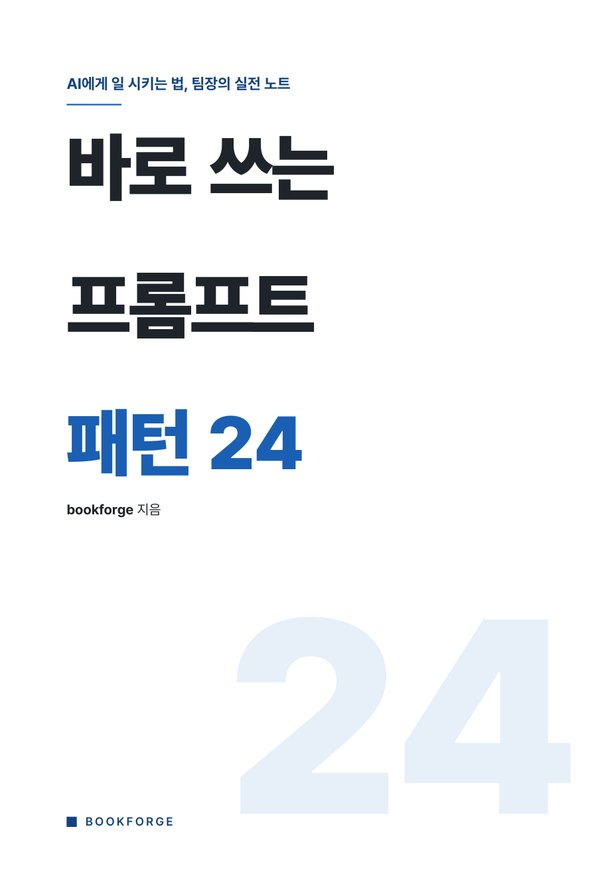
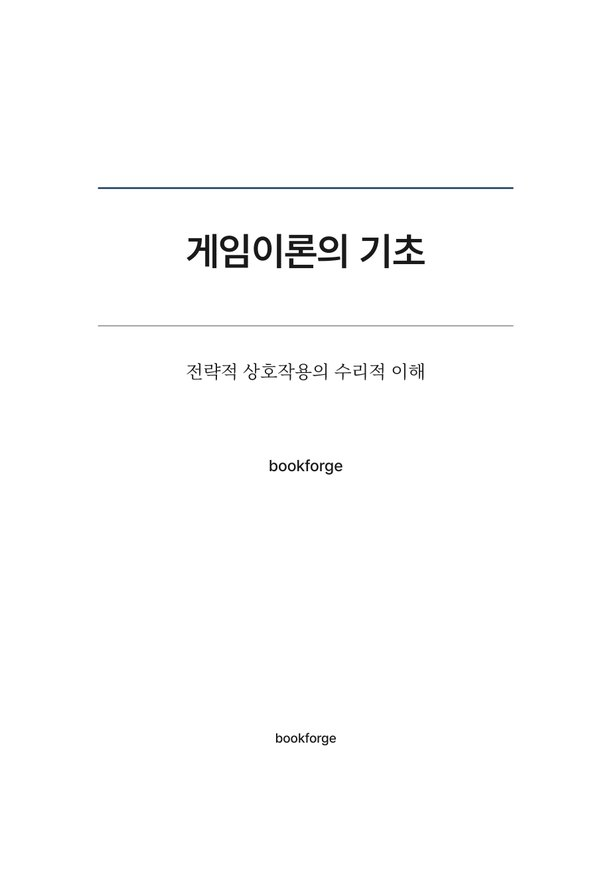
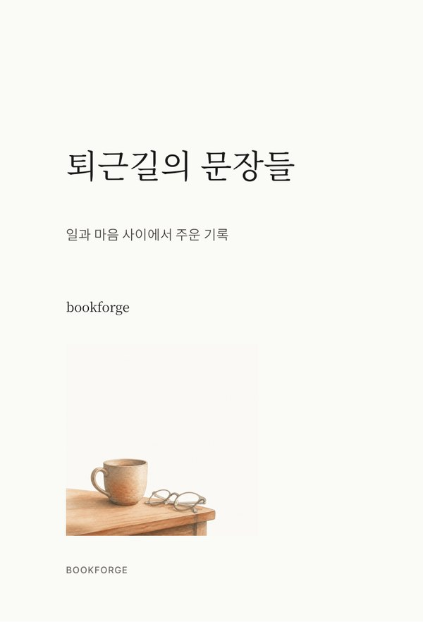
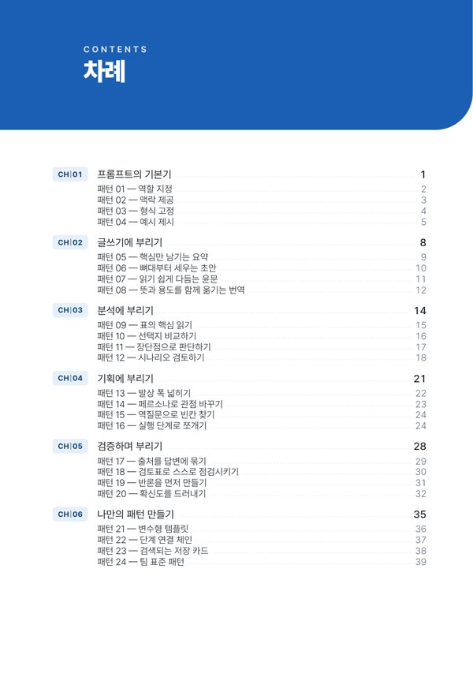
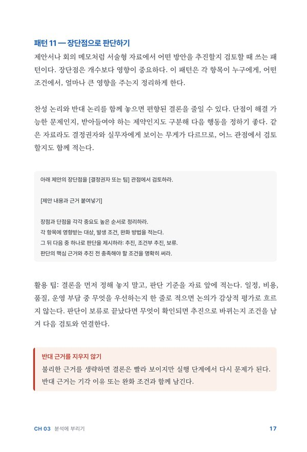
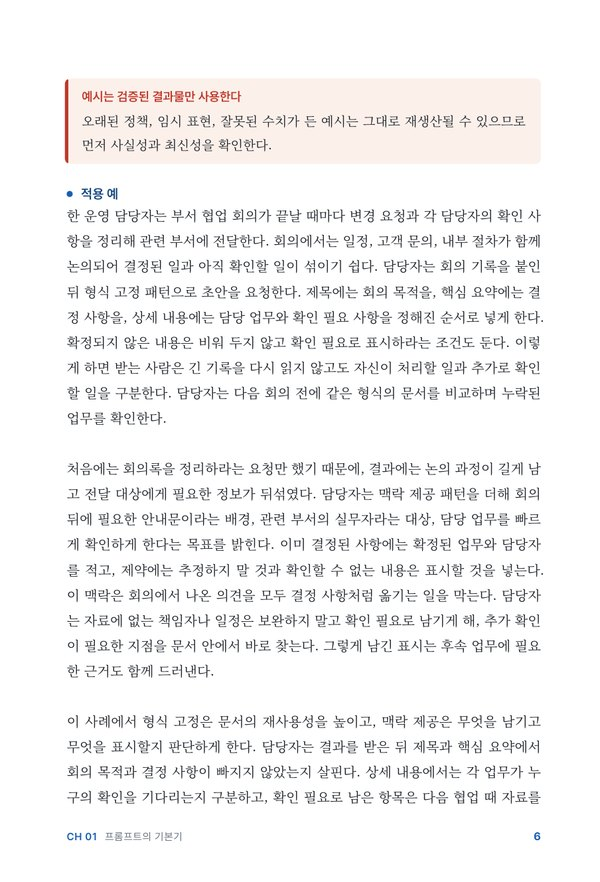
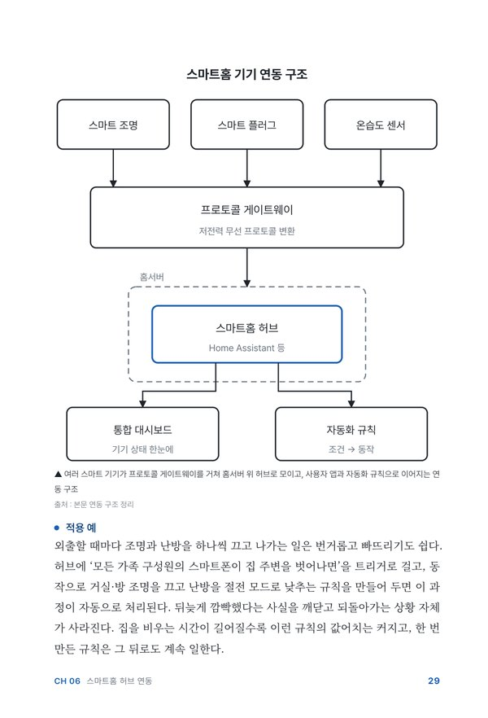

루프 복습, 기획서 점검
1 ~ 4장스킬 목록, 설치 프롬프트, 미설치자 대처
5 ~ 6장스킬, 스타일 6종, 책 해부, 게이트
7 ~ 12장예시 주제 한 권 만드는 과정
13 ~ 18장목차 승인, 1장 원고, 나머지 진행
19 ~ 21장휴식 10분 · 생성 계속
스타일 · 표지 문구, 게이트 대응, 캔바 표지
22 ~ 25장최종 체크, 배포, 3차시 예고
26 ~ 32장ChatGPT 데스크톱 앱 → 왼쪽 위 Codex → 작업 폴더 바이브코딩4기 / 02_전자책 선택
같은 ChatGPT 계정 로그인 확인 · 승인 요청은 내용 확인 후 허용 · 터미널 사용자는 그 폴더에서 codex
bookforge 보임 → 통과 · 안 보임 → 다음 장 설치 → Codex 재시작
설치된 스킬 목록 보여 줘. bookforge 가 있으면 설명 한 줄과 설치 위치도 알려 줘. 없으면 없다고만 말해 줘.
깃허브 레포에 있는 bookforge 스킬을 Codex에 설치해 줘.
레포 : https://github.com/gongnyang/bookforge
1. 설치 명령 실행
npx skills add gongnyang/bookforge -g -a codex -y --copy
2. 책 조판에 필요한 도구 점검, 없으면 설치
(Windows는 winget, Mac은 Homebrew)
- Typst 0.14 이상 (typst --version)
- Python 3.12 이상 + pymupdf, markdown-it-py
- 전역 Playwright + Chromium
npm i -g playwright → npx playwright install chromium
3. 환경 변수 PYTHONUTF8=1 확인, 없으면 설정
4. 설치된 bookforge 폴더에 SKILL.md 가 있는지 확인
끝나면 항목 · 상태 · 버전을 표로 보여 줘.| 항목 | 통과 기준 |
|---|---|
| bookforge 스킬 | SKILL.md 확인 |
| Typst | 0.14.x (4개 스타일 조판) |
| Python 패키지 | pymupdf · markdown-it-py |
| Playwright · Chromium | insight · magazine · 도해용 |
| PYTHONUTF8 | 1 (한글 깨짐 방지) |
주제 · 기획만 입력 → 조사 → 목차 → 장별 집필 → 조판 → 게이트
완성 원고 입력 (md · txt · docx) → 구조 정리 → 조판. 문장 재작성 없음
모드 · 스타일 · 분량 확정 → 책 폴더 만들기
outline.json(목차) + chapters/ch-NN.md(원고)
build.py → draft/book.pdf (조판 초안)
qc_gate.py 통과 → final/ 생성
표지 · 차례 · 도비라 · 본문을 이미지로 열어 눈으로 확인



예시: gongnyang/bookforge (MIT) · 판형 단위 mm


예시: gongnyang/bookforge (MIT) · 『바로 쓰는 프롬프트 패턴 24』 practical 45쪽
build.py 가 만든 조판 초안
결과 → gate-report.json 기록
게이트 스크립트만 final/ 생성 가능
이전 final/ 도 무효 처리
| 게이트 | 검사 내용 |
|---|---|
| G1 | 렌더 성공 · 판형 · 분량 범위(경고) |
| G2 | 폰트 전부 내장 |
| G3 | 글자 넘침 · 줄 겹침 0 |
| G4 · G14 | 목차 쪽번호 = 실제 쪽 |
| G7 · G12 | 이유 없는 빈 면 · 꼬리 미달 |
| G10 | 박스 속 숫자 · 인용이 본문에 실재 (날조 차단) |
| 프리셋 | 장 구성 (topic 모드) | practical 쪽수 | 용도 |
|---|---|---|---|
| short | 5~7장 × 장당 2,000~3,000자 · 본문 1.2만 자 이상 | 24 ~ 60쪽 | 미니 전자책 · 오늘 실습 |
| standard | 8~12장 × 장당 3,000~4,500자 | 80 ~ 150쪽 | 본격 단행본 |
| long | standard 이상 | 150 ~ 240쪽 | 두꺼운 책 |
| 우리가 정하는 것 | 프롬프트에 쓰는 말 |
|---|---|
| 문장 · 단락 | 짧은 문장, 단락은 4문장 이내 |
| 톤 · 사례 | 존댓말, 용어는 풀어서, 내 경험은 1인칭 |
codexbookforge 스킬로 미니 전자책을 만들어 줘. (topic 모드) - 주제 : 퇴근 후 2시간 부업을 시작하려는 40대 직장인용 미니 전자책 - 기획서 : 아래 내용 기준 (독자 · 약속 · 목차 5장 유지) 예) 기획서 최종본 전체 붙여 넣기 - 스타일 : practical / 분량 : short / 5장 - 책 폴더 : side-job-book - 제목 · 부제 · 저자 : 예) 퇴근 후 2시간 부업 · 예) 40대 직장인의 첫 부업 설계 · 예) 홍길동 - 조사는 핵심만. 출처 확인 못 한 숫자는 쓰지 마. - 존댓말, 짧은 문장, 용어는 풀어서. - outline.json(목차)을 표로 먼저 보여 주고, 내가 승인하기 전에는 집필하지 마.
Typst · Python 패키지 · Playwright 확인. 없으면 설치 요청 후 중단
scaffold.py → book.json · outline.json · chapters/
research.md 조사 노트 (책에는 미포함). 출처 확인된 수치만 본문 사용
outline.json: 장별 제목 · 요약 · 목차 문구
chapters/ch-01.md ~ ch-05.md. 표 · 리스트 · 팁 박스 장당 2개 이상
build.py → qc_gate.py → final/ → 페이지 이미지 확인
| 장 | 제목 · 요약 (시연 예시) |
|---|---|
| 1 | 왜 퇴근 후 2시간인가 · 시간 확보가 첫 관문인 이유 |
| 2 | 내 경력에서 부업 재료 찾기 · 이미 가진 것 목록화 |
| 3 | 첫 상품 하나 정하기 · 작게 팔아 보는 기준 |
| 4 | 2시간 루틴 설계 · 평일 · 주말 시간표 |
| 5 | 첫 수익 이후 · 계속할지 판단하는 기준 |
3장과 4장 순서 바꾸고, 5장 요약을 질문형으로. 나머지는 그대로. 다시 보여 줘. 목차 승인. 집필 시작해 줘.


예시: gongnyang/bookforge (MIT) · 『바로 쓰는 프롬프트 패턴 24』 · 『나만의 홈 서버』
bookforge 스킬로 내 기획서를 미니 전자책으로 만들어 줘. (topic 모드) - 기획서 : 아래 내용 기준 (독자 · 약속 · 목차 5장 유지) 예) 기획서 최종본 전체 붙여 넣기 - 스타일 : 예) practical / 분량 : short / 5장 - 책 폴더 : 예) my-book (영문, 공백 없이) - 제목 · 부제 · 저자 : 예) 제목 · 예) 부제 · 예) 내 이름 - 조사는 핵심만. 출처 확인 못 한 숫자는 쓰지 마. - 장마다 내 경험이 들어갈 자리를 요약 옆에 표시해 줘. - outline.json(목차)을 표로 먼저 보여 주고, 내가 승인하기 전에는 집필하지 마.
2장과 3장 순서 바꾸고, 4장 제목을 질문형으로. 나머지는 그대로. 다시 보여 줘.
목차 승인. 1장(chapters/ch-01.md)만 먼저 쓰고 멈춰 줘.
- 사례 자리에 아래 내 경험 메모를 1인칭 '저는'으로 녹여 줘.
꾸미지 말고 메모에 있는 사실만.
예) 경험 메모 10줄 붙여 넣기
- 메모에 없는 숫자 · 사례는 넣지 마.
- 장 분량 2,000~3,000자, 표 · 리스트 · 팁 박스 섞어서.
다 쓰면 ch-01.md 내용을 그대로 보여 줘.사례의 '예) 월 300만원'은 내 메모에 없는 숫자야. 빼고 메모의 '예) 첫 달 7만원'으로 바꿔 줘. 나머지는 그대로.
1장 확정. 1장과 같은 말투 · 구조로 2~5장을 써 줘.
내 경험 자리는 [경험 : 예) 넣을 경험 안내] 로 비워 둬.
그다음 build.py → qc_gate.py 까지 진행해 줘.
게이트가 실패하면 gate-report.json 의 원인만 고쳐서 다시 돌려 줘.
끝나면 final 경로와 쪽수를 알려 줘.PDF 있음 → 통과 · 비어 있음 → B-3
표지 · 차례 · 장 도비라 · 본문
원래 폴더 유지 → 새 폴더에 다른 스타일
같은 원고로 예) essay 스타일 버전도 만들어 줘. 원래 책 폴더는 그대로 두고 예) my-book-essay 폴더에. 빌드와 게이트까지 진행하고 final 경로를 알려 줘.
| 바꿀 것 | 위치 |
|---|---|
| 제목 · 부제 · 저자명 | book.json |
| 발행일 (판권면) | book.json 의 date |
| 표지 모양 (practical) | cover_variant: numeral(기본) · ribbon · block · grid · obi |
| 브랜드 색 | brand (#색상코드) |
| 저자 소개 | 전용 면 없음 → 마지막 장 끝 절로 추가 |
book.json 을 고치고 다시 빌드해 줘. - 부제 : 예) 40대 직장인의 첫 부업 설계 - 저자 : 예) 내 이름 / 발행일 : 2026-10 - 표지 : cover_variant 를 예) ribbon 으로 5장 끝에 '저자 소개' 절을 5줄로 추가해 줘. 예) 경력 한 줄 · 연락처 이메일 build.py → qc_gate.py 까지 다시 돌리고 결과 알려 줘.
gate-report.json 을 쉬운 말로 설명해 줘. 실패한 게이트, 원인이 된 쪽, 고칠 방법 순서로. 그다음 원인만 고쳐서 build.py → qc_gate.py 다시 돌려 줘. 쪽수 맞추려고 부록 추가 · 행간 늘리기는 하지 마.
| 자주 보는 실패 | 대응 |
|---|---|
| G7 꼬리 미달 (장 끝 면 빈약) | refit.py 자간 미세조정 → 문단 1~2개 증감 |
| G10 박스 숫자 본문에 없음 | 본문에 근거 추가 또는 숫자 삭제 |
| G3 넘침 · 겹침 | 표 · 긴 단어 위치 조정 |
| G16 빌드 즉시 중단 | 보고서 없음 → Codex 화면의 오류 메시지 읽기 |
| PASS | final/ PDF → 휴대폰으로 열어 읽기 |
사용자 지정 크기 153 × 225 mm (practical 판형) · 템플릿 검색 「전자책 표지」
제목 · 부제 · 저자명 · 이미지 1장 · 기획서 독자 한 줄
PDF 인쇄용 → 책 폴더 assets/ · PNG → 판매 썸네일 · 4차시 랜딩
캔바에서 만든 표지 PDF로 판매용 책을 만들어 줘. - 표지 파일 : assets/예) canva-cover.pdf - 원본 : final/ 안의 완성 PDF (원본은 수정하지 마) - 할 일 : 원본 1쪽(기본 표지)을 캔바 표지로 바꾼 새 파일을 final/예) 내책_판매용.pdf 로 저장 - 크기가 다르면 원본 쪽 크기에 맞춰 줘 (pymupdf 사용) 끝나면 1~3쪽 미리보기 이미지를 보여 줘.
bookforge 스킬로 이 원고(예) 원고.docx)를 예) essay 스타일 PDF 로 조판해 줘. 문장은 고치지 말고 표기만 정리해 줘. 책 폴더 : 예) my-essay 게이트 통과까지 진행하고 final 경로를 알려 줘.
| 상황 | 해결 |
|---|---|
| 스킬 목록에 bookforge 없음 | Codex 완전 종료 후 재실행 (설치 직후 재시작 필요) → 그래도 없으면 설치 프롬프트 재실행 |
| 승인 요청이 계속 뜸 | 폴더 생성 · 설치 · 스크립트 실행 → 내용 확인 후 허용 · 모르는 삭제 명령은 거절 후 질문 |
| 한글 깨짐 (물음표 · 기호) | PYTHONUTF8=1 설정 → 앱 완전 종료 후 다시 열기 |
| 경로를 못 찾음 | 폴더 이름의 공백 · 한글 → 책 폴더 영문 이름으로 다시 |
| 렌더 실패 (typst · chromium 없음) | typst --version 확인 → 설치 프롬프트 2번 · insight · magazine은 Playwright 필요 |
| 수업 중 생성 미완료 | 창 유지 · 절전 해제 → 다음에 「이어서 진행해 줘」 |
서점 매대에서 이 표지를 보면 집어 들까?
장 제목만 읽어도 내 고민이 풀릴 것 같은가?
게이트를 통과한 한 권, 미완성 백 쪽보다 우선.